FT Mighty Mini Mustang MKR2 · reconstruction check
The reconstruction reproduces all eight published figures to within 0.40 %. That says the numbers agree. It says nothing about whether the shape is right — so here it is, rendered at the camera angle of a product photograph and laid over it.
Both views are the same aircraft from above, forward and to the right,
nose low and starboard. The render is AeroSandbox at
elev=40, azim=140, scaled so its silhouette covers the same
area as the one in the photograph.
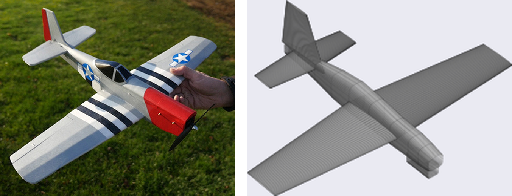
The model’s silhouette in red over the photograph, aligned by centroid and scaled by mask area rather than bounding box — the photo’s mask carries the hand’s fingers, which stretch its box without being aircraft.
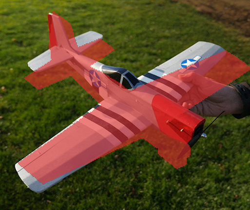
The filled silhouette occludes the thing it is being compared against, so it can only be judged where red spills outside the aeroplane. An outline — the silhouette minus its own erosion — leaves the photograph visible and lets every edge be read against its counterpart. A wireframe carries interior structure too, but at this line density it buries the subject.
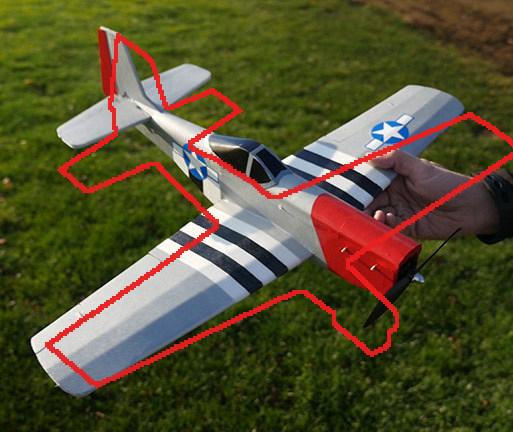
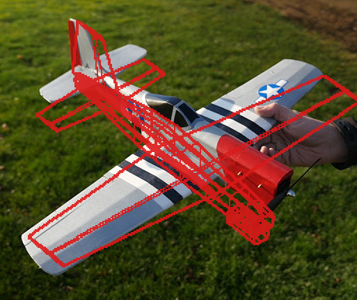
Guessing the angle works but cannot be checked. The principled version names a handful of landmarks in both the model and the photograph and solves for the camera that puts one on the other — and then each landmark’s leftover error is a measurement, in pixels and in millimetres, rather than an impression.
The landmarks come out of the geometry generically. Nothing in
pose_fit.py knows what a Mustang is: it walks whatever
wings and fuselages the aircraft has and names extreme points
structurally, so twelve came back here without being asked for.
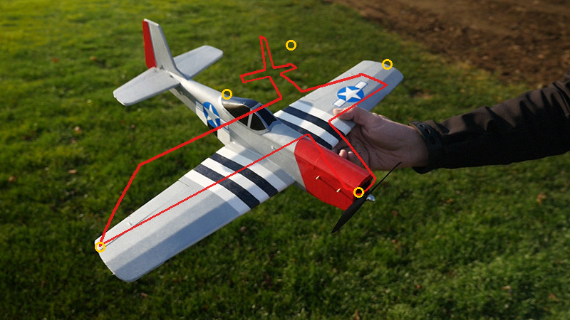
elev 43.6° azim 150.8°. Gold rings are the five named landmarks. The wing lands true; the tail assembly sits well forward of the real one.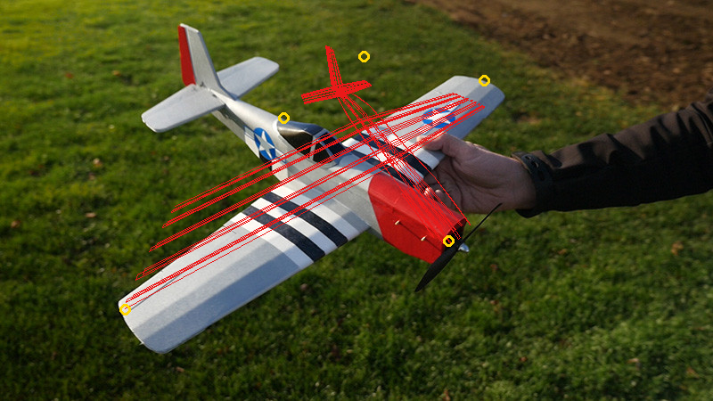
| Landmark | Residual | At 1.85 mm/px |
|---|---|---|
| main-wing : tip | 0.4 px | 0.7 mm |
| fuselage : nose | 12.2 px | 22.6 mm |
| horizontal-stabilizer : tip | 28.7 px | 53.0 mm |
| main-wing : tip-mirror | 30.4 px | 56.3 mm |
| vertical-stabilizer : tip | 34.9 px | 64.6 mm |
And the numbers lied. Look at the overlay rather than the table: the tail floats free of the aeroplane and the wing does not track its edges. This pose is visibly worse than one guessed by eye, despite a flattering 21 px mean.
The tell is in the fitted parameters. Camera distance came back at 0.25 m for a 622 mm aircraft — closer than the photograph can possibly have been taken. Five correspondences against seven free parameters leaves almost no redundancy, so the optimiser spent it: extreme perspective places those five points beautifully and distorts everything between them. A residual table is not a check when the thing being checked is what the residual was fitted to.
The fix is to stop asking about points. Rasterise the projected mesh into a mask, compare it with the photograph’s subject mask, and maximise the overlap — thousands of boundary pixels constraining the pose instead of ten numbers. A degenerate perspective that balloons the near half of the aircraft now costs overlap rather than buying precision.
Nothing is rendered inside the loop: the projected faces are drawn straight into a PIL image, which is exact and fast enough to optimise against. Eighty-two seconds, multi-start over twelve azimuths and three elevations.
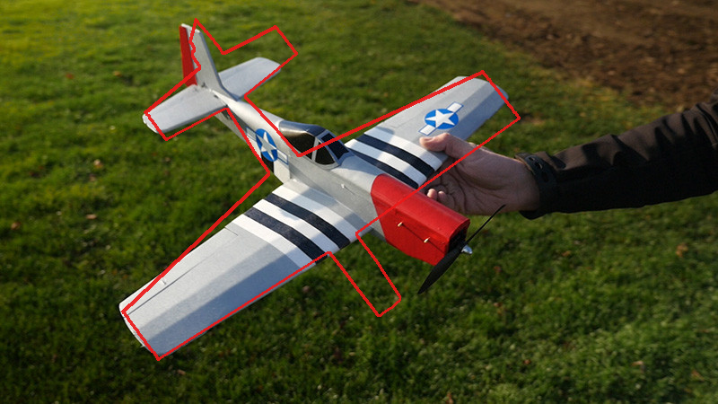
elev 68.7° azim 144.5°, camera at 10.2 m. The distance is physical this time, because distorting the whole outline is penalised. Wing, fin and stab all track; the loose box low centre is the power pod, which this viewpoint hides on the real aircraft.| Method | Fitted distance | Overlay | Needs |
|---|---|---|---|
| Guessed by eye | n/a | good | someone to look |
| Landmark correspondence | 0.25 m — degenerate | poor | 5 points identified |
| Silhouette overlap | 10.2 m — physical | best | a separable background |
Overlap is a poor objective. It is flat where the two shapes do not yet intersect, so an optimiser started wrong gets no gradient and wanders; and it saturates once they mostly agree, so the last and most interesting millimetres barely move the score. A thin wing makes both worse.
Chamfer distance has neither failure: every outline pixel contributes its distance to the nearest outline pixel of the other shape, so the cost falls away smoothly in the right direction from anywhere. It is the classical shape-matching objective for exactly this reason, and it is two distance transforms and a lookup. Symmetric, both directions — one way alone will happily shrink the model onto a corner.
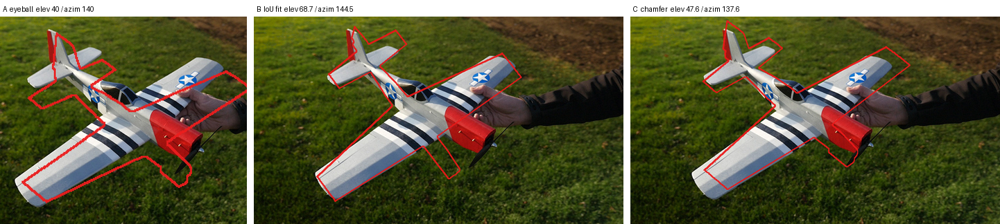
| Pose | elev / azim | IoU | Mean outline error |
|---|---|---|---|
| Guessed by eye | 40.0 / 140.0 | — | — |
| Overlap (IoU) fitted | 68.7 / 144.5 | 0.694 | — |
| Chamfer fitted | 47.6 / 137.6 | 0.667 | 11.9 px |
The chamfer pose scores WORSE on IoU and looks better. That is the finding, not a contradiction: overlap rewards covering area, and the mask it is covering has a hand in it, so the optimiser tilted the aircraft to 68.7° to blanket a thumb. Chamfer cares only that edges meet edges, which is what the eye is judging too. It also lands at 47.6° / 137.6° — within a few degrees of the guess, which is reassurance for both.
And 11.9 px is an interpretable number in a way IoU is not: it is the average distance between the two outlines, so it converts directly to millimetres once the scale is trusted.
Page one of the plan carries a photograph of the built aircraft on pure white — the same airframe, no hand, no grass. Segmenting it needed a threshold and nothing else: no colour rule, no looking at the image first. That is the whole non-agentic pipeline running end to end.
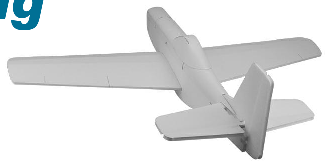
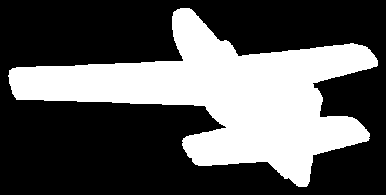
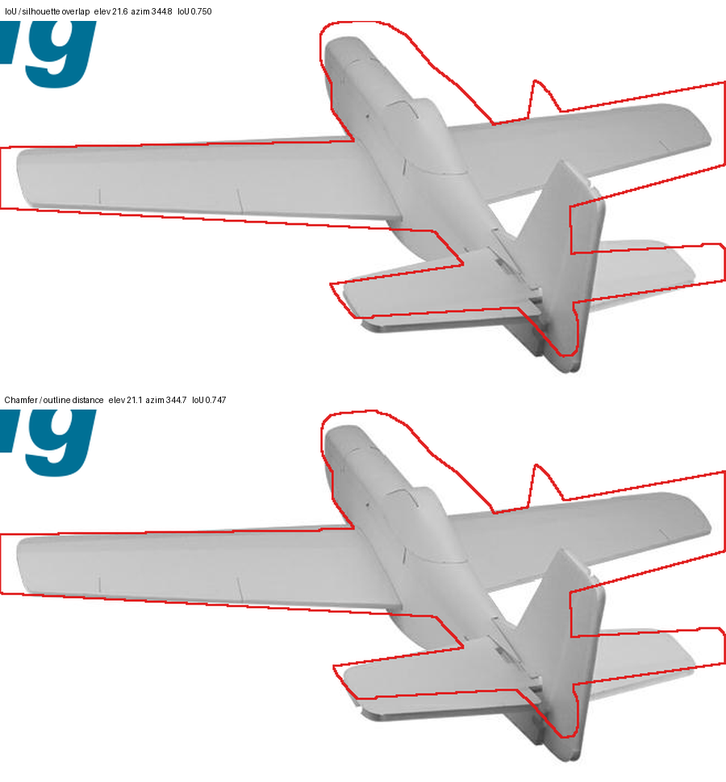
| Photograph | Overlap fit | Chamfer fit | Disagreement |
|---|---|---|---|
| On grass, with a hand | 68.7° / 144.5° | 47.6° / 137.6° | 21.1° elevation |
| On white, clean mask | 21.6° / 344.8° | 21.1° / 344.7° | 0.5° |
Which revises the earlier conclusion. Chamfer is not better because it is a better objective — it is better because it tolerates a bad mask. Overlap rewarded covering area, and the area it was covering included a thumb, so it tilted the aircraft to blanket one. Remove the contamination and the two agree to half a degree. Given a good mask, either works; given a poor one, prefer chamfer.
And the fit is now good enough that the remaining red is model error. Four things show in both this view and the grass one, which is what makes them worth believing:
The fitting, entirely.
fit_silhouette(pts, faces, target) takes no human input:
no landmarks, no angle to guess, no starting pose. That half is a
library function.
The segmentation, not reliably. The mask that made the fit above work came from a colour rule written after looking at the photograph — which is the agentic step. Replacing it with a generic rule that seeds the background from the frame border recovered about half the aircraft on this photograph and essentially nothing on a second one with a house and sky in the frame.
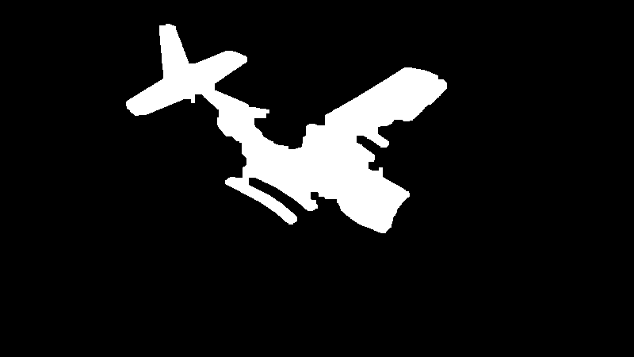
So the condition is on the input, not the method — and the section above demonstrates it: on a white ground the threshold was enough, both fits agreed to half a degree, and nothing in the pipeline needed a human. On grass with a hand in frame, the hand ends up inside the mask being fitted to, and some of that 0.694 is the model dutifully trying to cover a thumb.
| Difference | Consequence | Matters |
|---|---|---|
| Horizontal stab larger, further forward | Changes tail volume, and therefore static margin | aerodynamic |
| Fuselage too slender and tubular | Under-predicts body drag and side area | aerodynamic |
| Canopy smoothed into the loft | Plan has separate turtle decks and a canopy part | shape |
| Wing root chord looks deep | May be real, may be perspective — needs the plan | shape |
| No spinner or propeller | None — not modelled, and correctly so | cosmetic |
The stabiliser is the one worth chasing. Everything else is either a refinement or a question the plan can answer directly.
Rendering at an arbitrary viewpoint is three lines —
ax.view_init(elev, azim) after passing your own axes to
airplane.draw(ax=…). Four candidates were enough to
find the photograph’s viewpoint by eye.
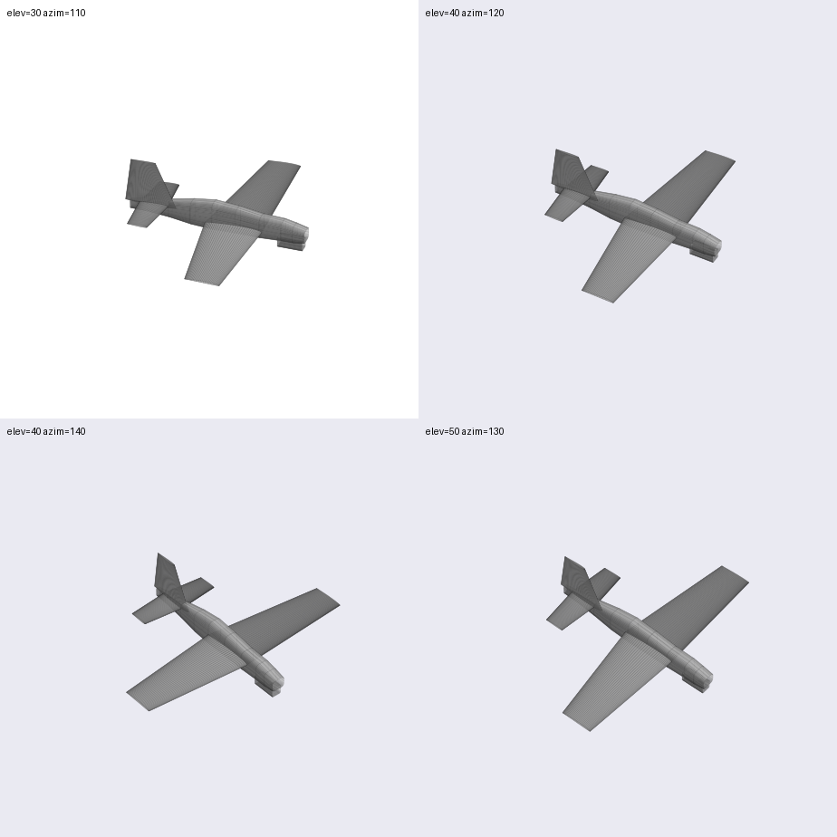
elev=40, azim=140, lower left, matches the photograph.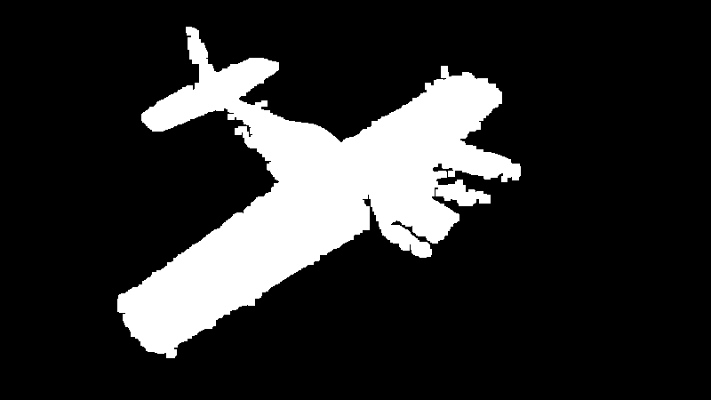
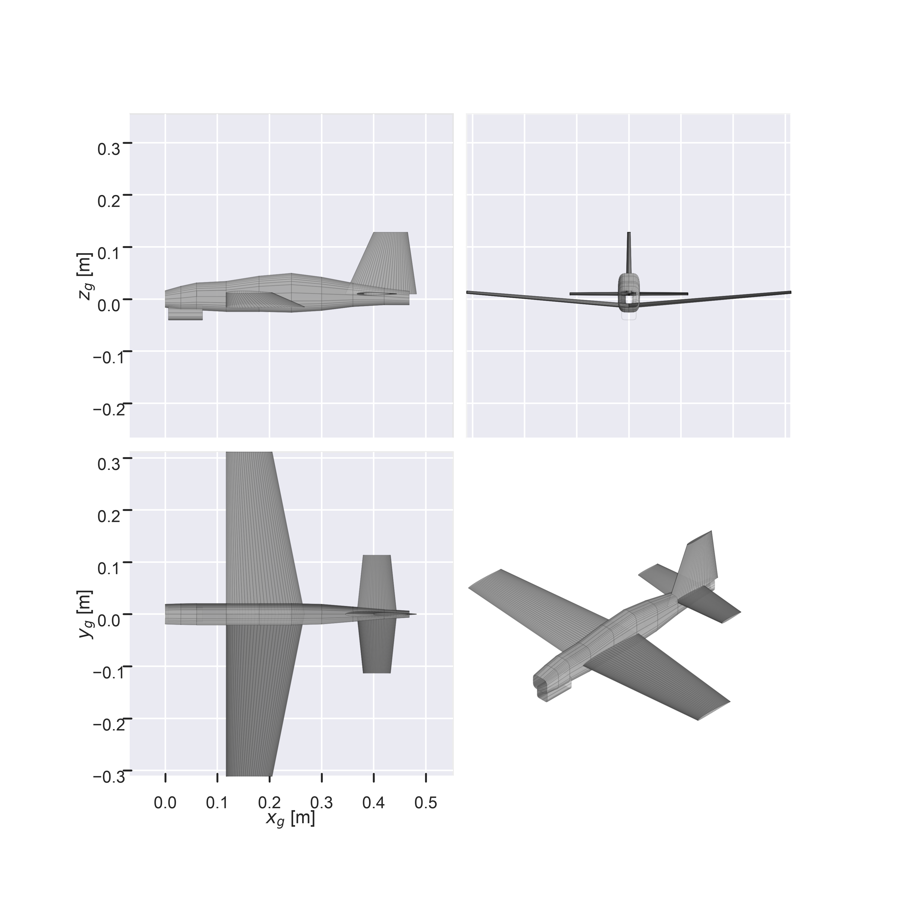
shape 2.5 → 4.0) and adding the power pod, plan part 00, which existed only as a 6 g mass entry.
The side-by-side, for a quick look; and fit_chamfer when
a number is wanted. Together they need no landmarks and no guessed
angle — only a photograph whose subject separates from its
background.
Any residual produced by a pose that was fitted to it. Check the overlay before the table — the landmark fit scored 21 px and was visibly wrong, and nothing in the number said so.
bbox_inches="tight" crops the canvas, so matplotlib’s
reported pixel coordinates stop matching the saved file. Projecting the
mesh straight into photograph pixels removed the whole class of bug.